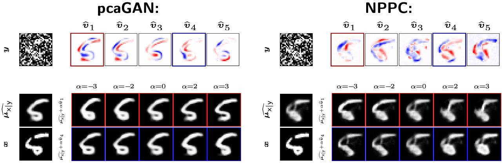
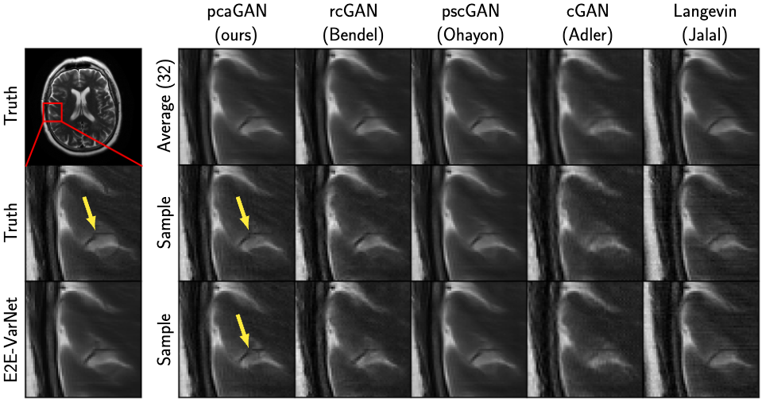
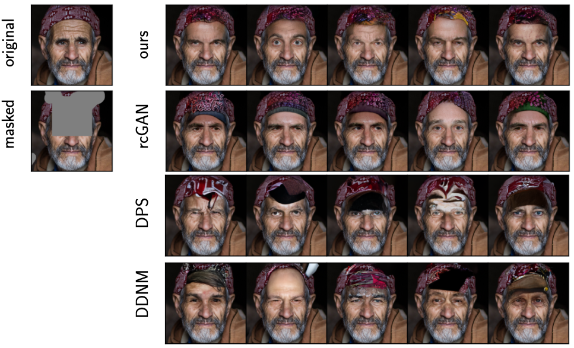

pcaGAN: Improving posterior-sampling cGANs via principal component regularization
NeurIPS 2024
Matthew Bendel
Rizwan Ahmad
Philip Schniter
Abstract
In ill-posed imaging inverse problems, there can exist many hypotheses that fit both the observed measurements and prior knowledge of the true image. Rather than returning just one hypothesis of that image, posterior samplers aim to explore the full solution space by generating many probable hypotheses, which can later be used to quantify uncertainty or construct recoveries that appropriately navigate the perception/distortion trade-off. In this work, we propose a fast and accurate posterior-sampling conditional generative adversarial network (cGAN) that, through a novel form of regularization, aims for correctness in the posterior mean as well as the trace and K principal components of the posterior covariance matrix. Numerical experiments demonstrate that our method outperforms contemporary cGANs and diffusion models in imaging inverse problems like denoising, large-scale inpainting, and accelerated MRI recovery.
Our Main Contribution
We extend our previous work, rcGAN, and propose
a new regularization for the generator that encourages correctness in the \(K\)
principal components of the posterior covariance matrix,
as well as the posterior mean and posterior trace-covariance when sampling the posterior. Our regularization is defined as
\(\mathcal{R}(\boldsymbol{\theta}) = \mathcal{L}_{\sf rc}(\boldsymbol{\theta}) + \beta_{\sf pca}(\mathcal{L}_{\sf evec}(\boldsymbol{\theta}) + \mathcal{L}_{\sf eval}(\boldsymbol{\theta})) \),
where \(\boldsymbol{\theta}\) are the generator's parameters, \(\mathcal{L}_{\sf rc}\) is rcGAN's regularization,
and \(\mathcal{L}_{\sf evec}, \mathcal{L}_{\sf eval}\) encourages the generator's principal
eigenvectors \(\{\hat{\boldsymbol{v}}_k\}_{k=1}^K\) and eigenvalues \(\{\hat{\lambda}_k\}_{k=1}^K\) to match those of the true covariance matrix:
\(\{\boldsymbol{v}_k\}_{k=1}^K\) and \(\{\lambda_k\}_{k=1}^K\).
Our approach outperforms existing cGANs and diffusion models on posterior sampling tasks like denoising, large-scale image completion, and accelerated MRI recovery,
while sampling orders-of-magnitude faster than those diffusion models.
We also demonstrate that pcaGAN recovers the posterior principal components more accurately than the Neural Posterior Principal Components (NPPC) method from Nehme et al., which directly
estimates them.
Eigenvector Regularization
We define \(\mathcal{L}_{\sf evec}\) as
\(\mathcal{L}_{\sf evec}(\boldsymbol{\theta}) = -\mathbb{E}_{\sf y}\big\{ \mathbb{E}_{\sf x,z_1,\dots,z_P|y}\big\{ \sum_{k=1}^K[\hat{\boldsymbol{v}}_k^\mathsf{T}(\boldsymbol{x}-\boldsymbol{\mu}_{\sf x|y})]^2 \big|\boldsymbol{y}\big\}\big\}\),
where \(\boldsymbol{y}\) are our measurements, \(\boldsymbol{x}\) is the true image, \(\boldsymbol{\mu}_{\sf x|y}\) is the true posterior mean, and \(\{\hat{\boldsymbol{v}}_k\}_{k=1}^K\) are estimated posterior eigenvectors computed via and SVD of \(P=10K\) generator, \(G_{\boldsymbol{\theta}}\), posterior samples \(\{\hat{\boldsymbol{x}}_i:~\hat{\boldsymbol{x}}_i = G_{\boldsymbol{\theta}}(\boldsymbol{y}, \boldsymbol{z}_i)\}_{i=1}^P\) for \(\boldsymbol{z}_i\sim\mathcal{N}(\boldsymbol{0},\boldsymbol{I})\).
If \(\boldsymbol{\mu}_{\sf x|y}\) was known, minimizing over \(\boldsymbol{\theta}\) would force \(\{\hat{\boldsymbol{v}}_k=\boldsymbol{v}_k\}_{k=1}^K\).
Therefore, we approximate \(\boldsymbol{\mu}_{\sf x|y}\) as \(\boldsymbol{\mu}_{\sf x|y} \approx \hat{\boldsymbol{\mu}}_{\sf x|y} = \texttt{StopGrad}(\frac{1}{P}\sum_{i=1}^P\hat{\boldsymbol{x}}_i) \)
after \(\frac{1}{P}\sum_{i=1}^P\hat{\boldsymbol{x}}_i\) stabilizes with respect to validation PSNR.
Eigenvalue Regularization
We define \(\mathcal{L}_{\sf eval}\) as
\(\mathcal{L}_{\sf eval}(\boldsymbol{\theta})) = \mathbb{E}_{\sf y}\big\{ \mathbb{E}_{\sf x,z_1,\dots,z_P|y}\big\{ \sum_{k=1}^K\big(1 - \lambda_k/\hat{\lambda}_k\big) \big|\boldsymbol{y}\big\}\big\}\),
where \(\{\lambda_k\}_{k=1}^K\) are the true principal posterior eigenvalues and \(\{\hat{\lambda}_k\}_{k=1}^K\) are the estimated posterior eigenvalues, computed from the same SVD as above.
If \(\lambda_k\) was known, minimizing over \(\boldsymbol{\theta}\) would force \(\{\hat{\lambda}_k=\lambda_k\}_{k=1}^K\).
Therefore, we approximate \(\lambda_k\) as \(\lambda_k \approx \texttt{StopGrad}(\tfrac{1}{P_{\mathsf{pca}}+1}\big\|\hat{\boldsymbol{v}}_k^\textsf{T}[\boldsymbol{x}-\hat{\boldsymbol{\mu}}_{\sf x|y},\hat{\boldsymbol{x}}_1-\hat{\boldsymbol{\mu}}_{\sf x|y},\dots,\hat{\boldsymbol{x}}_{P}-\hat{\boldsymbol{\mu}}_{\sf x|y}]\big\|_2^2)\)
after \(\{\hat{\boldsymbol{v}}_k\}_{k=1}^K\) stabilize, which is correct in expectation when \(\hat{\boldsymbol{v}}_k\) and \(\hat{\boldsymbol{\mu}}_{\sf x|y}\) are correct.
Please see our poster or our paper for more information!
Sample Eigenvectors for MNIST Digits
We used pcaGAN to denoise MNIST digits. Below, we show \(K=5\) principal covariance components, as well as \(\hat{\boldsymbol{\mu}}_{\sf x|y} \pm \alpha\hat{\boldsymbol{v}}_k\) for \(k\in\{1,4\}\) and \(\alpha\in\{-3,-2,0,2,3\}\). We compare with NPPC, which directly estimates the principal covariance components. For additional examples, please see our supplementary material.
pcaGAN's eigenvectors show much more meaningful structure.
Sample Reconstructions
We applied pcaGAN to multicoil MRI reconstruction and large-scale image completion with random masks. For additional examples, please see our supplementary material.
MRI Reconstruction
Samples from our cGAN show meaningful variations (see arrows).
Image Completion
Samples from our cGAN are both high quality and diverse.
Paper
pcaGAN: Improving posterior-sampling cGANs via principal component regularization
Matthew Bendel, Rizwan Ahmad, Philip Schniter
Bibtex
@inproceedings{Bendel:NIPS:24,
title={pca{GAN}: {I}mproving Posterior-Sampling {cGANs} via Principal Component Regularization},
author={Bendel, Matthew and Ahmad, Rizwan, and Schniter, Philip},
booktitle={Thirty-eigth Conference on Neural Information Processing Systems},
year={2024},
url={https://openreview.net/pdf?id=Z0Nq3hHeEG}
}
Acknowledgements
The authors are funded in part by the National Institutes of Health under grant R01-EB029957.
This webpage is based off the template that was originally made by Phillip Isola and
Richard Zhang for a colorful ECCV project;
the code for the original template can be found here.
This site uses bootstrap and font awesome.